N0 1. Bugatti : Chiron
| 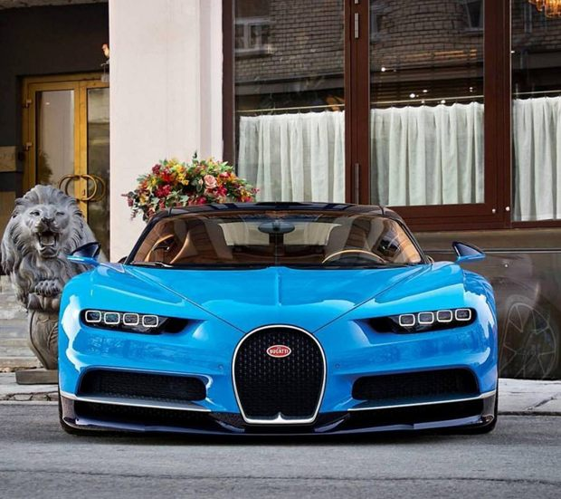 |
BREAKING NEW DIMENSIONS |
N0 2. Bugatti : Veyron
| 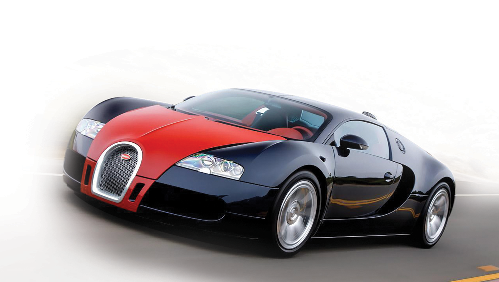 |
Bugatti Veyron 16.4 |
N0 3. Lamborghini : Aventador
 |
Lamborghini : Aventador |
 |
N0 4. Lamborghini : HURACÁN
| 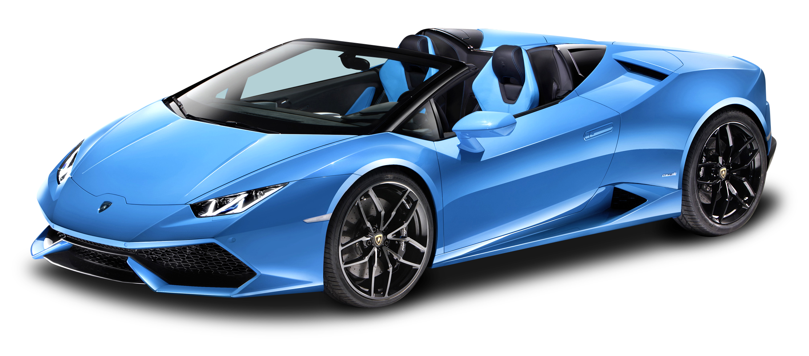 |
Lamborghini : HURACÁN
The Huracán Performante has reworked the concept of super sports cars and
taken the notion of performance to levels never seen before. The vehicle has
been re-engineered in its entirety, as regards its weight, engine power, chassis
and above all by introducing an innovative system of active aerodynamics:
ALA. The combination of these modifications and the skilled work of the team
at Lamborghini, took the Huracán Performante to complete a lap at
Nürburgring in 00:06:52:01 setting a new record for best lap and becoming
the fastest standard production car at the Shrine of Speed.
|
N0 5. LA Ferrari
|
LA Ferrari |
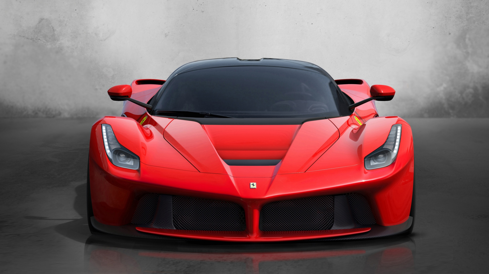 |
N0 6. Rolls Royce : GHOST
| 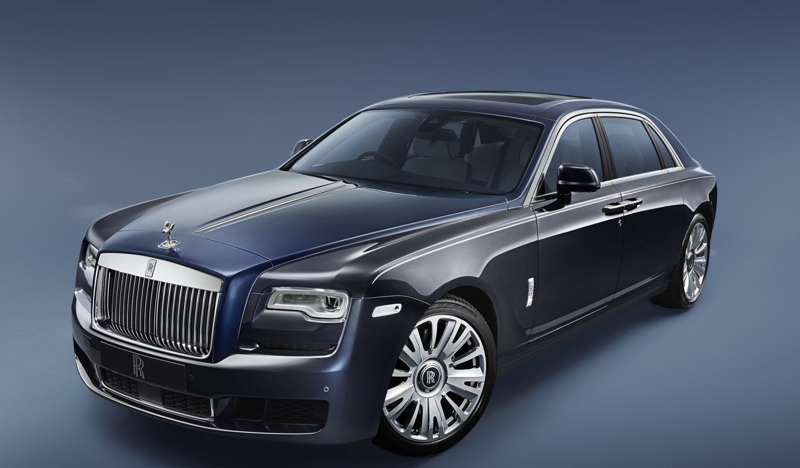 |
GHOST |
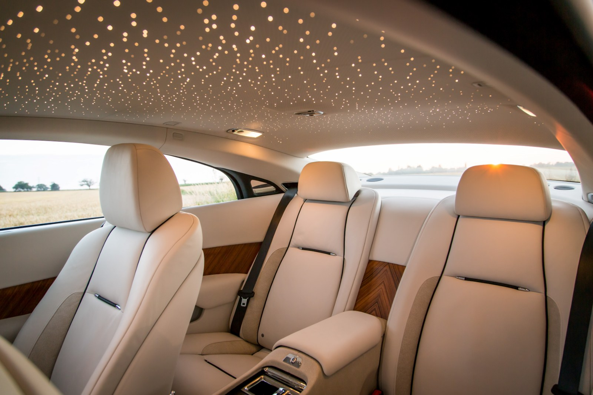 |  |
N0 7. McLAREN 650S Spider
<
|
McLAREN |
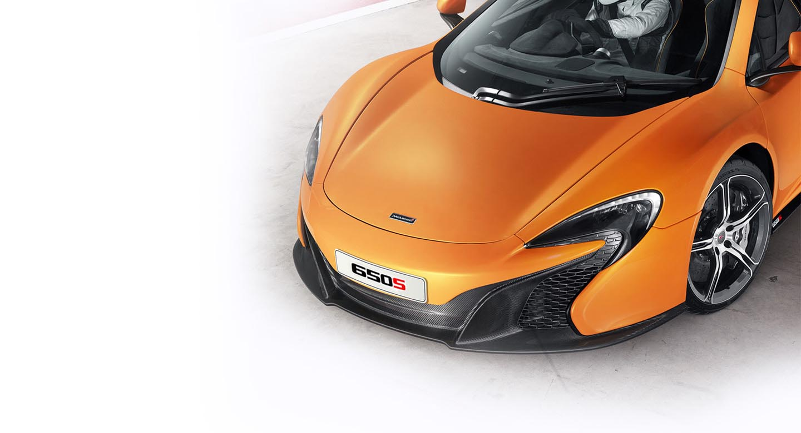 |
N0 8. Aston MARTIN DB11
| 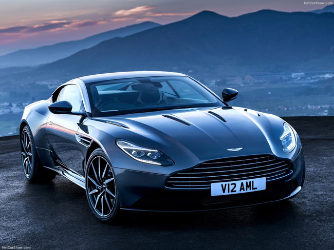 |
Aston Martin |
N0 9. BMW i8 
| 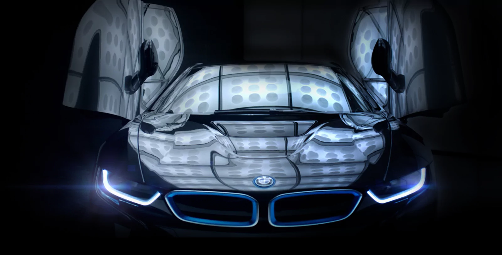 | 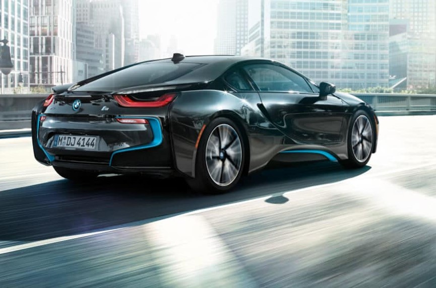 |
N0 10. Lamborghini : Veneno
| 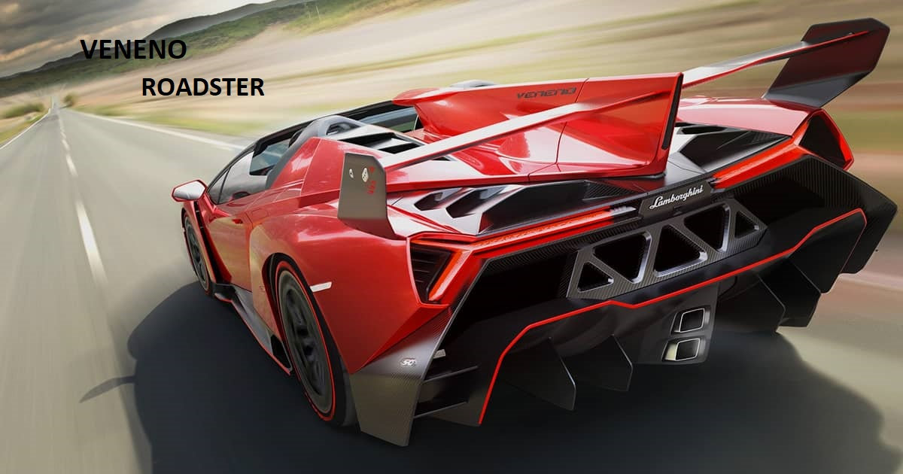 | |
|
OVERVIEW LAMBORGHINI VENENO: IT WILL FEEL LIKE FLYING ON THE ROAD |
 |